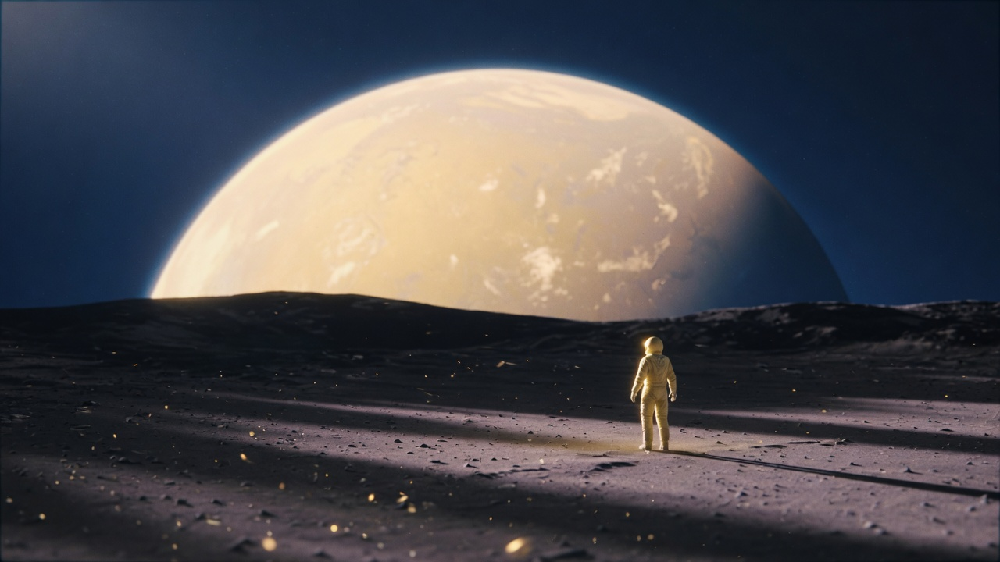
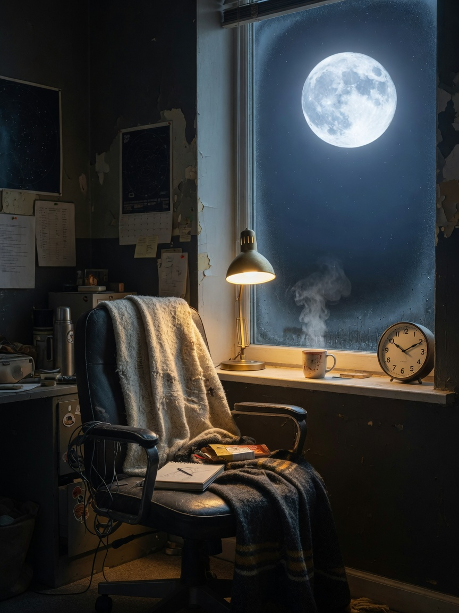
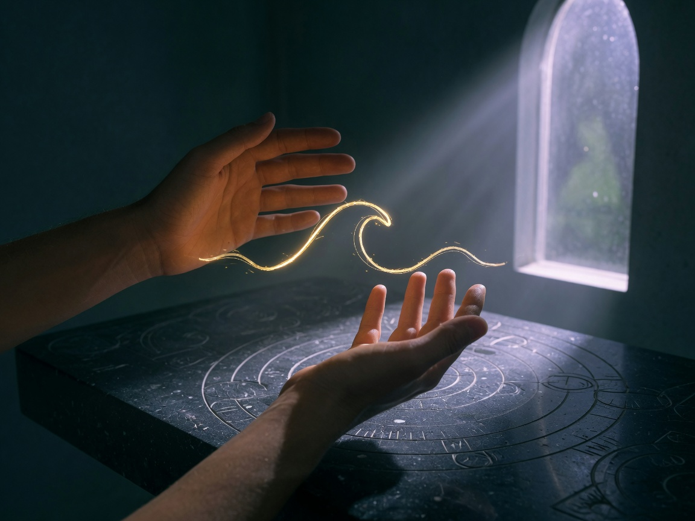
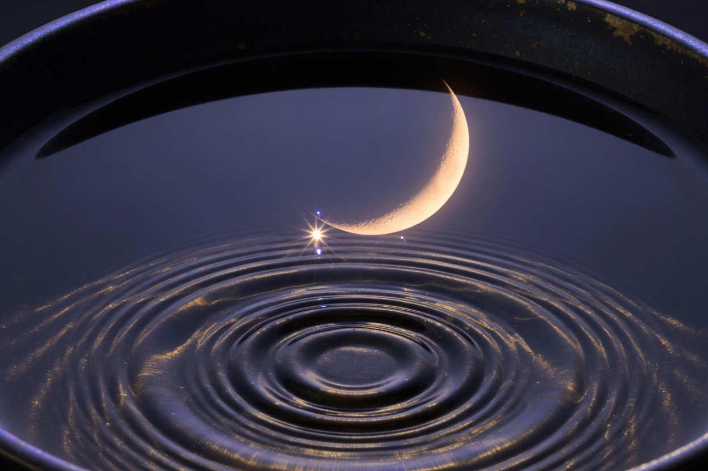
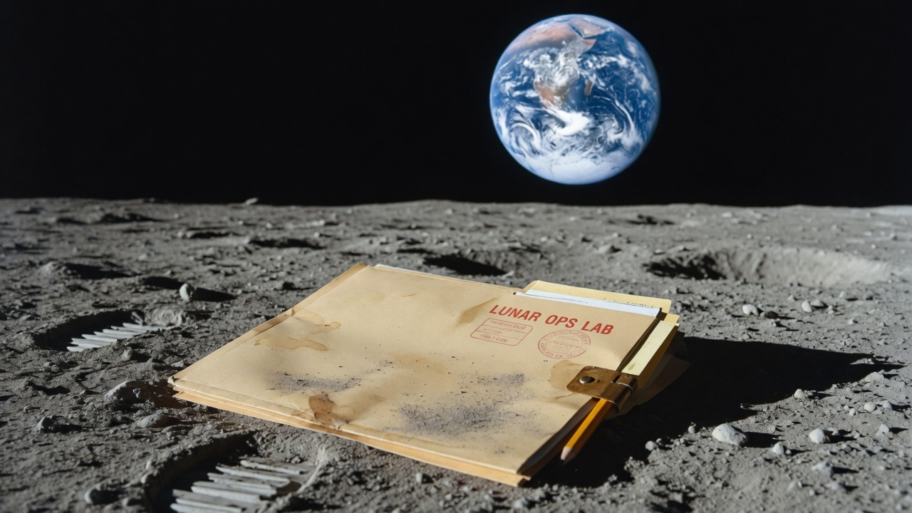

Kairos
Greek: the ripe moment. Not more hours. The one hour that changes the week. Monday lock is kairos with a date on it.

Kairos · Coherence · Frequency
Chronos is the clock. Kairos is the hour you actually meet. This site is a small sanctuary: three instruments for a nervous system that still has to live on Earth while it learns the Moon.
Healing first. Then cadence. Educational only. Not medical or financial advice. Build with me. Ad Astra.
Sanctuary
If the multiplanetary story costs us our breath, it is not a future worth locking. I build public instruments — and I keep a room where the body can remember it is not a machine.
Greek: the ripe moment. Not more hours. The one hour that changes the week. Monday lock is kairos with a date on it.
In physics: phases lock. In a chest: breath and pulse stop fighting. Six-ish breaths a minute is a real, gentle practice — not a metaphor.
Hertz is how often a wave repeats. Meaning is what you do while it repeats. We will not sell you a number as a religion.

Instrument I
The Moon is 1.28 light-seconds away. That is how long “now” takes to arrive. Everything else on this panel is chronos — so you can notice when you leave it.
Phase and sign update from this moment’s tropical ecliptic. Close enough to journal. Not close enough to land.
Kairos journal
The twelve houses of the zodiac are the belt she is walking — tropical ecliptic, live from this clock. Phase is the work of the cycle. The house is the weather. Write in that weather, not against it.
Reading the sky…
—
—
Focus
—
Release
—
Intention
—
Journal this hour
A house here means her sign on the tropical belt — Aries through Pisces — not a natal house. Natal houses need your horizon. This page keeps the sky we share.
New Martians
Where the red world sits on the same belt, what her two small moons are doing this hour, and the emotional weather a settler borrowed from Earth.
—
Angular weather between the two worlds, from Earth.
Phobos
—
7h 39m lap. Rises in the west, sets in the east. Mean orbit, live from J2000 rates.
Deimos
—
30h 18m lap. Almost parked in the sky. The slow companion.
Under Luna’s influence
—
Instrument II
Sit. Soften the jaw. Let the belly move. In for about five and a half seconds. Out for the same. That cadence sits near 0.1 Hz — a rhythm many hearts will follow if you give them a quiet room.
Not a medical device. If breathwork feels wrong, stop. You already know how to breathe; this only reminds the pace.


Instrument III
A sine is honest: one frequency, no costume. Choose a tone. Let it be a room you sit in. Tradition has names for some of these. Physics has only the number. Both can be true if you do not confuse them.
Silent. Sound is a choice.
7.83 Hz is the first Schumann resonance of Earth’s cavity. Speakers cannot sing it, so the button plays it five octaves up (250.56 Hz). 432 and 528 are cultural tunings, not medicine. If a tone soothes you, that is your nervous system — keep the credit.
False friends, kept honest
Physics: cycles per second (Hz).
Care: the pace you return to. Useful. Not a spell.
Physics: a stable phase relationship.
Care: breath and attention no longer at war.
Physics: the capacity to do work. Conserved. Accounted.
Care: how much of you is left after the feed. Different ledger.
Not a unit. Greek for the time that is ripe.
The lock you keep. The conversation you finally have. The hour you sit still.

Who
I live at the intersection of space hardware, markets, first principles, and the inner weather that decides whether any of that is livable. The lunar economy is cadence and customers. A life is breath and timing.
My job on the internet is to translate the stack without abandoning the human who has to carry it — so a regular person can follow along, and so operators remember they have a chest.
Work in the world
Instruments for a multiplanetary economy — kept in the same house as the sanctuary, so neither forgets the other.

Cislunar economy simulator
A free educational app that lets you simulate a realistic $2,500 book in the Earth–Moon stack — space names, a public Alpha Base Book, catalyst scores, and a 3D Moon you can actually look at.

First-principles toolkit
Six ruthless modes for Grok: deconstruct, audit, synthesize, generate hypotheses, map civilizational consequence. Built so curiosity can do PhD-shaped work without the costume.

Teachers kit
One period. One $2,500 paper book. One Monday lock. Printable classroom packet — the stack, the entry gate, the operator card.
Thesis
Rockets are infrastructure. A person who cannot come back to breath will not last the night shift.
Monday lock. The conversation. The hour you sit. Quarters, not someday — and not at the cost of the chest.
NASA, DoD, constellations, hyperscale. If the customer is hypothetical, the name is a mood.
Use the number. Keep the feeling. Do not sell one as the other. That is how this house stays clean.
You do not need a 40-page about page. You need to know if I am useful — and if this room felt like air.
Talks, threads, briefings, classroom kits. Cislunar in human language.
Sims, public books, first-principles tools. Software that teaches while it runs.
Kairos, coherence, honest tone. Operator content that does not abandon the person.
X is the door until a quieter one exists.